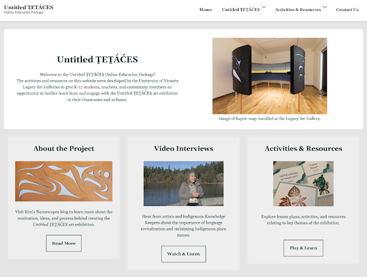

Hello from the unceded territories of the lək̓ʷəŋən Esquimalt and Songhees Nations and WSÁNEĆ Peoples, on the lands known also as Vancouver Island.
"Namescapes" are the landscapes of place names, or toponyms, we create culturally and individually to name the places around us.. Namescapes are part of our shared knowledge systems and histories.
This site reflects part of my journey to understand ways to encourage new harmonies between settler and Indigenous namescapes, especially in and around the Salish Sea. I also want to celebrate a growing chorus of those working toward reconciliation—an evolving and understandably contested term—through the acknowledgment, restoration, and creation of Indigenous toponyms.
As part of this journey, TEMOSEṈ, Jesse Campbell, and I (Kim Shortreed) collaborated on an art-installation project, the Untitled ṮEṮÁĆES map, which is intended to get us to think differently about how we learn about the SENĆOŦEN places and place names around us, cartographically and historically.
Click on the image below to see a virtual, interactive version of the Untitled ṮEṮÁĆES map we created together:
Check out more about the making of and thinking behind the Untitled ṮEṮÁĆES map (in the UNTITLED ṮEṮÁĆES MAP menu, above). Or check out the NAMESCAPE sections for more about place names and related resources.
For all the educators out there, be sure to check out the Untitled ṮEṮÁĆES Online Education Package, designed and hosted with great generosity by UVic's Legacy Galleries.

This education package provides some excellent resources, videos, and exercises for K-12 students, teachers, and anyone else who wants to learn more about naming, place, and territory through the lens of the Untitled ṮEṮÁĆES art exhibition.
Welcome and ÁȽE¸ E SW̱ U¸ ͸ OL¸.